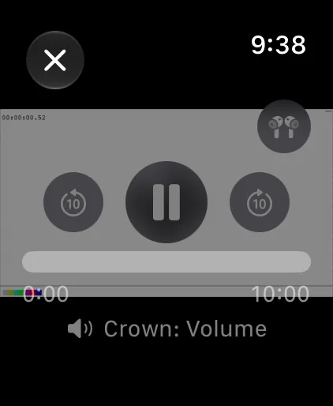
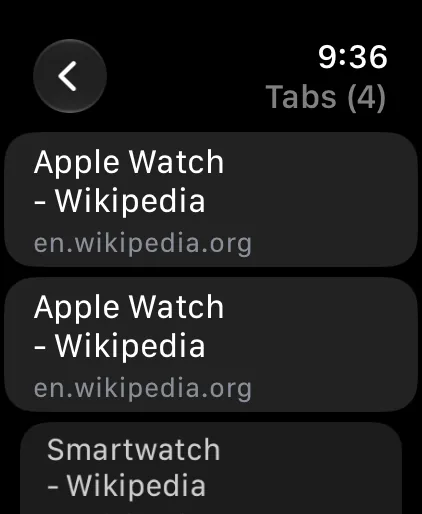
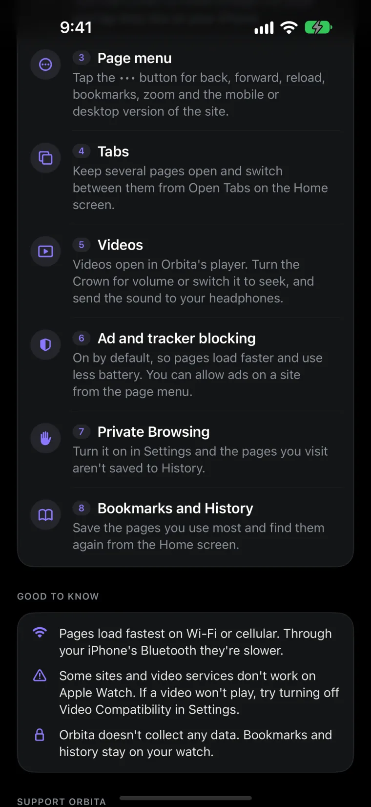
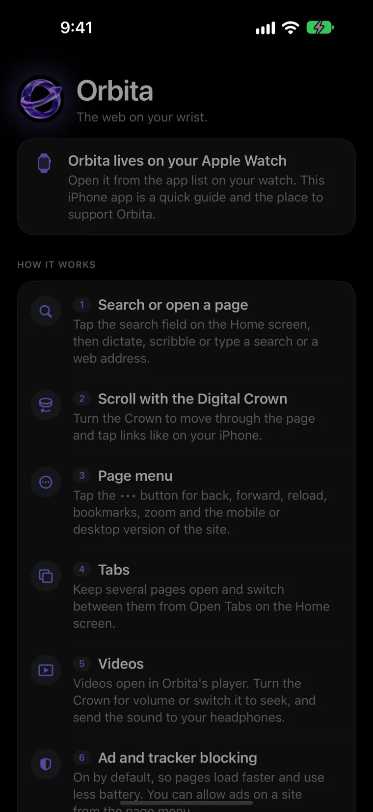
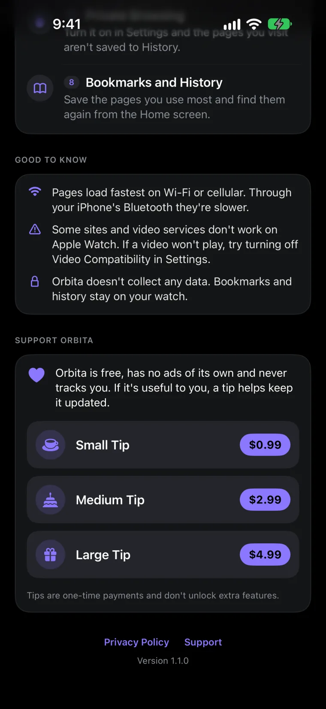

Tabs
Keep several pages open and switch between them. They stay open after you close the app, and unused tabs go to sleep to save memory.
Web browser for Apple Watch
Search, read and watch videos right from your Apple Watch. No ads, no trackers, no reaching for your iPhone.
Free · Apple Watch with watchOS 10 or later · Optional tips, no ads of our own



Built-in blocking
Blocking happens inside the web engine, before anything downloads. Pages load faster and your battery lasts longer.

Videos
Orbita finds the videos on each page and opens them in the watch's native player.
Everyday browsing
Keep several pages open and switch between them. They stay open after you close the app, and unused tabs go to sleep to save memory.
Find what you read again and save the sites you use most. Clear your history whenever you want.
Dictate, scribble or type. Say an address like “wikipedia dot org”. Choose DuckDuckGo, Google, Bing or Ecosia.
Ask sites for their mobile, desktop or watch version, from Settings or the page menu.
Make text bigger or smaller from the page menu.
Pop-ups are stopped, and the page menu tells you how many.


Privacy
Orbita has no accounts, no analytics and no ads of its own.

iPhone app included
Orbita lives on your Apple Watch. The iPhone app shows how it works in 8 steps and is where you can leave an optional tip.



Tips are one-time payments and don’t unlock extra features.
Free on the App Store
Pages load fastest on Wi-Fi or cellular. Through your iPhone’s Bluetooth they’re slower. Some sites and video services don’t work on Apple Watch.